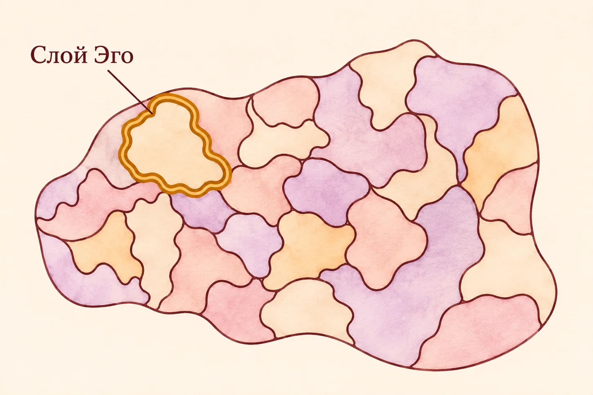
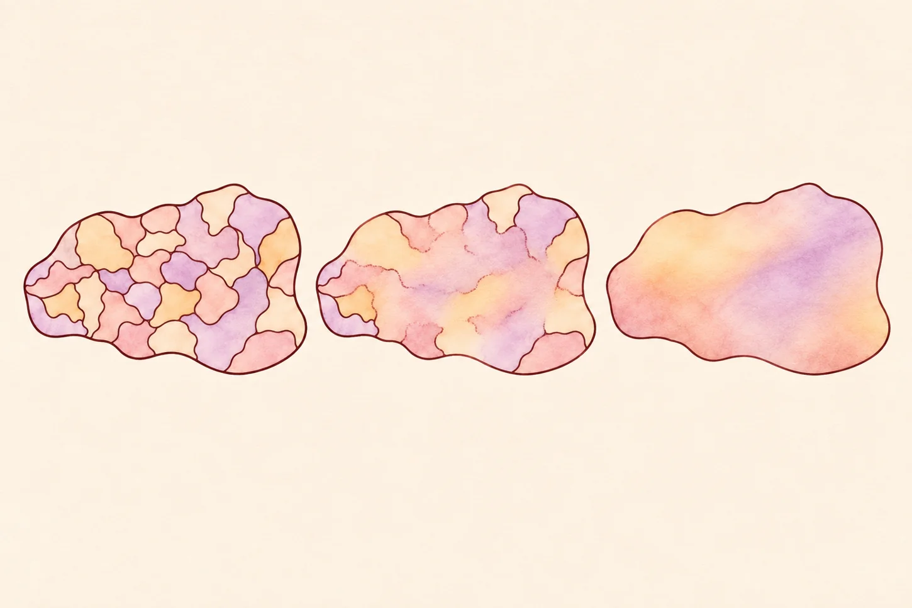
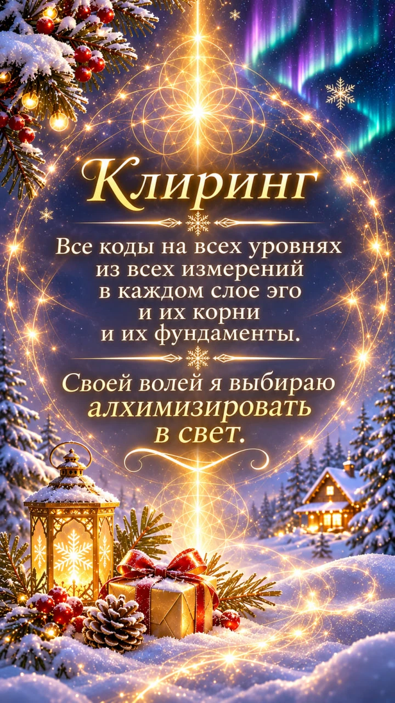

Конспект занятия
Лилия Маслова · Хроники Акаши. Код доступа
- Тень. В тень уходят чувства, желания, качества и целые части личности, которым мы когда-то перестали давать место. В той же части остаётся её сила. Злость может вернуть способность обозначить границу, а зависть — показать, чего я хочу.
- Субличность. У каждой части свой голос, цель и способ действовать. Когда одна хочет проявляться, а другая боится осуждения, я ощущаю это как «хочу и сама себя останавливаю». В тень может уйти вся фигура или отдельное её качество.
- Слои Эго. Болезненный опыт может закрепить выводы о себе и привычные формы реакции. Слои Эго исследуют через текущую жизнь, род и опыт прошлых воплощений. Глубинная тень может открываться через несколько слоёв.
- Мир-зеркало. Чужая холодность или жадность могут подсветить, где я сама закрываюсь, обесцениваю свои желания или запрещаю себе получать. Зеркало открывает вопрос к себе. Поступки другого человека и мои решения в отношениях тоже имеют значение. Подробнее о проекциях и архетипах — в лекции 6.
- Мембрана разделения. Внутренние перегородки показывают, как я переживаю некоторые свои грани как отделённые. Когда перегородки растворяются, видна та же форма целиком. «Я пришла сюда уже целостной. Я и есть целостность».
- Исцеление и путь проводника. Принять часть — дать ей место, вернуть её силу себе и заметить, как я могу действовать сегодня. Иногда это раскрывается само по себе, иногда через осознанную работу. Распаковка опыта может продолжаться после занятия. Проводнику тоже нужны время, поддержка и возможность замедлиться.
Схема «Мембрана разделения мир-зеркало»
Лекция 1. Тень и её сила
Как часть нас уходит в тень
Что такое тень? Это то, какой мне когда-то нельзя было быть. Я могла злиться, но мне говорили, что хорошие девочки так себя не ведут. Я могла хотеть внимания и слышала «не высовывайся». А иногда мне ничего прямо не запрещали. Я просто смотрела, как мама и бабушка всё тянут сами, и делала вывод: если я хочу быть сильной, мне нельзя просить о помощи.
В тень могут уйти простая эмоция, например злость, более длительное чувство, например одиночество, или целая уязвимая часть, которая несёт болезненный опыт. Вместе с ними мы прячем желания и способности. Та часть меня, которая заботится обо всех, каждый день при деле. Другая годами ждёт, пока я хотя бы признаюсь себе: «Я устала. Я хочу, чтобы обо мне тоже позаботились».
В аналитической психологии Карл Густав Юнг использовал понятие тени для непризнанных сторон личности. Тень — подавленная часть нашей сути. Слово «сущность» здесь связано со словом «сущий» и указывает на то, что уже есть в нас. В работе с Эго мы смотрим, какой слой проявился, какую программу он несёт и как эта программа действует в жизни.
Как тень проявляется
Иногда я вижу её в реакции, которая сильнее самой ситуации. Иногда в осуждении, зависти, стыде или привычке молчать там, где я злюсь. Иногда я узнаю её только по повторяющейся истории. Люди меняются, а я опять жду, когда меня выберут, спасаю без просьбы или всё делаю сама.
Раздражает женщина, которая среди дня спокойно идёт на массаж. За этим может быть моё «мне нельзя отдыхать» и способность делегировать, которой я себе давно не позволяла пользоваться. Меня злит человек, который говорит «мне это не подходит». Возможно, мне самой нужно такое право. Или я действительно столкнулась с тем, что мою границу нарушили. Поэтому сначала я смотрю, что произошло, что я почувствовала и чего мне сейчас хочется или не хватает.
- Агрессия: за пассивной злостью может быть способность защитить себя, поставить границу и сказать «нет».
- Эгоизм: за жертвенностью и спасательством может быть право учитывать себя.
- Жадность: за стыдом хотеть больше может быть умение ценить свой труд и называть цену.
- Зависть: за обесцениванием чужого результата может звучать моё «я тоже так хочу».
- Контроль: за попыткой удержать всё может быть сила, которую можно направить в ответственность и лидерство.
Тень Шута — пример того, как возвращается яркость. Цветные волосы и вещи, которые я сама разрисовываю, дают мне возможность быть увиденной, вызывать улыбку, входить в контакт. Можно так же исследовать ту сторону, которой хочется разрешить яркий образ или наряд в духе Lady in Red. Здесь важно посмотреть, что в этом оживает именно для меня.
Десять женских теней
- Бездельница. Я могу отдыхать без вины и поручать другим часть работы.
- Эгоистка. Я могу учитывать свои интересы в общем решении.
- Жадная или меркантильная. Я могу честно признавать свои желания и хотеть большего.
- Наглая. Я могу прямо просить, напоминать о себе и называть цену.
- Слабая. Я могу просить, опираться на другого и принимать заботу.
- Злая или агрессивная. Я могу слышать сигнал «мне это не подходит» и обозначать границу.
- Сексуальная. Я могу хотеть, чувствовать удовольствие, свободнее проявлять яркость и живость.
- Звезда. Я могу быть заметной, говорить о достижениях и выдерживать внимание.
- Соперница или конкурентка. Я могу признавать амбиции и выбирать масштаб, который мне интересен.
- Тупая или глупая. Я могу чего-то не знать, задавать вопросы, пробовать и учиться.
Практика «Моя тень». Кто меня раздражает? Что я осуждаю? Где мне стыдно? Какое желание я себе запрещаю? Где боюсь быть плохой? Выпишите пять качеств. Для каждого запишите, как оно действует, пока я его не замечаю, и какую силу может дать. На неделю выберите одну часть и попробуйте дать ей место в одном конкретном поступке.
Лекция 2. Субличности и внутренний диалог
Внутри каждого из нас живёт огромное количество субличностей. Представьте разных персонажей, у каждого свои цели, мотивы и способ действовать. Одна хочет проявляться, другая боится отказа и выключает всё при первой трудности. Одна всё выполняет по правилам, другая хочет творить и делать по-своему. Одна хочет зарабатывать работой с людьми, другая убеждена, что ещё долго должна доказывать, что достаточно хороша. Как будто кто-то давит на газ, а кто-то одновременно на тормоз.
Субличность — часть меня со своим привычным способом чувствовать и действовать. Теневой она становится там, где я перестаю её признавать. Например, «Сильная женщина. Всё сама» — фигура на виду. Она решает, контролирует, подхватывает и с трудом просит. А в тени может оставаться та, которая устала, хочет довериться и принять заботу. Сильную я спрашиваю: «От чего ты меня защищаешь?» Уставшую: «Чего ты так давно от меня ждёшь?»
Пять шагов
- Познакомиться. Взять одну ситуацию, где одновременно звучат «хочу» и «боюсь». Описать обе части, их голос, внешний образ, цели и страхи.
- Дать слово каждой. Представить их за одним столом. Спросить, чего каждая хочет, как хочет проявляться и что ей нужно, чтобы чувствовать себя в безопасности.
- Исследовать историю. Вспомнить, когда такая реакция уже помогала, какие правила я переняла от семьи. В Хрониках Акаши можно спросить Высшее Я, с каким опытом связана эта часть и что полезно увидеть сейчас.
- Распознать защиту. «От чего ты меня защищаешь? Какую боль или страх пытаешься предупредить? Как ещё можно обо мне позаботиться?»
- Договориться о действии. Какой шаг услышит обе части? Например, записать короткое видео на знакомую тему и позволить себе продолжить, даже если запнулась.
Две фигуры и внутренний адвокат
Возьмите два камушка или любые предметы. Один — та, которая давит на газ. Другой — та, которая тормозит. Подержите каждый и дайте ему сказать свою фразу. Можно добавить внутреннего взрослого. Он наблюдает, слышит ребёнка и критикующего или поддерживающего родителя, помогает им договориться о том, что делать сейчас.
Есть и пара прокурор и адвокат. Когда я решила доработать флагманский продукт и поднять цену, прокурор включился голосом мамы: «Куда ты лезешь, ещё столько не знаешь». Мой адвокат — Антошин из «Глухаря». Я говорю: «Антошин, давай выходи, будем разбираться». И через этот образ вспоминаю, что я умею, что мне нужно и как себя поддержать. Ваш адвокат может выглядеть как герой фильма, значимый взрослый или другая фигура, которой вы доверяете.
Задание. Запишите, кого нашли, чего каждая фигура хочет, от чего одна защищает, как выглядит ваш адвокат и до какого действия вы договорились.
Лекция 3. Глубинная тень и слои Эго
Воронка воплощения
Сначала образуется Душа — первая капля. Дальше Душа определяет себя через Эго. Духовное Эго связано с опытом Души и прошлыми воплощениями. Основное Эго — сознательная личность, которая складывается в текущей жизни. Теневая сторона — нижняя, подавленная часть Эго. В ней могут оставаться целые слои с наборами программ и записанными формами реакции.
Травмирующий опыт может запустить формирование слоя. Допустим, Душа пришла проходить опыт самоценности, чтобы потом сделать его своей силой. В детском саду девочке больно, она не смогла себя защитить. Из одного переживания могли сложиться разные выводы: «Мир опасен», «Я не могу себя защитить», «Мне нужно держаться подальше». Дальше ситуация уже другая, а реакция запускается как запись на жёстком диске с определённой настройкой. Так мы можем продолжать создавать жизнь из старого опыта, даже когда сознательно хотим другого.
Начало истории иногда открывается в детстве, в родовом опыте или на реинкарнационном слое. В Хрониках можно исследовать внутриутробный период, выбор мамы и более ранний образ, в том числе время, когда сама мама формировалась в утробе бабушки. То, что приходит в чтении, разбираем через вопрос: «Что это показывает о моей реакции сегодня?» Образ даёт направление исследования. Историю семьи устанавливаем отдельно по известным событиям.
Одна тень и несколько подтеней
Я закрываю глаза и вспоминаю конкретную ситуацию, где хочу проявляться и снова откладываю. В Хрониках иду в свой кабинет или класс, прошу Хранителей помочь и спрашиваю: «Что мне запрещает проявляться?» В одном таком чтении вышел глубинный страх позволения, а за ним часть, которую я назвала «внутренний эго-бомж». Я увидела, где запретила себе быть яркой. Спросила: «Почему?» Пришло: «Меня отвергли». Дальше открылся детский страх: значимые взрослые могли быть тёплыми, а затем становились резко холодными, ребёнок рядом не знал, чего ждать. Так одна история открылась и через детство, и через родовой слой.
За одной фигурой может быть несколько подтеней. Можно взять архетип Ведьмы, образ глубинного страха или фигуру, которая пришла из колоды, и спросить: «А что там ещё? Чего я боюсь следом? Что ещё себе запретила?» Можно обратиться к части словами «Я тебя вижу. Я тебя принимаю» и посмотреть, какой свет или сила в ней есть. Это та же практика принятия, которую мы узнавали на «Коде Богини».
Жадность партнёра и собственное непозволение
Чужая жадность может стать зеркалом. Допустим, я много говорю о том, сколько он мне не даёт. Что я чувствую рядом с этим? Что я сама себе запрещаю просить, получать или выбирать? Где мои собственные желания будто заранее не имеют веса? Отдельно я вижу, какие решения принимает сам партнёр и что мне действительно подходит рядом с ним.
Первый ключ к позволению — принять свою внутреннюю силу. Позволить себе что-то большее — значит позволить себе быть чем-то большим. А это начинается там, где я принимаю больше себя, включая свои глубинные тени.
Лекция 4. Мембрана разделения мир-зеркало
Эмоциональный холод и зеркало
Представьте женщину, которая снова влюбляется в эмоционально недоступного мужчину. Она действительно может быть тёплой. А теперь посмотрите, что происходит в момент, когда ей самой кто-то нужен. Она скучает и молчит. Ей больно, она делает вид, что занята. Он спрашивает, хочет ли она, чтобы он остался, и она отвечает: «Как хочешь». Она видит чужой холод, а свою защиту может долго пропускать.
Это похоже на ледяное кольцо вокруг сердца. Внутри осталось тепло, а снаружи человек видит дистанцию. Иногда это знакомо с детства, когда ребёнок тянулся к теплу и встречал отстранённость. В отношениях можно увидеть обе стороны: какой мужчина рядом и в какие моменты я сама прячу свои чувства. Тогда появляется выбор прямо сказать «мне важно», попросить о близости или признать, что в этих отношениях мне её мало.
Принятие всех своих граней
В работе со светом и тьмой тьма — это тень. Единство с собой начинается там, где я даю место и ей. Мы привыкли измерять себя идеальностью, хотя у каждого есть свой уникальный опыт. Эго может сопротивляться тому, что ему неудобно проживать. А за этим у меня всё равно есть возможность услышать свою часть и прожить опыт целиком.
Мир-зеркало виден и во встрече, где вскрывается общая тема с двух противоположных сторон. В примере из записи ведущая пошла на встречу по интуитивному импульсу. Она почувствовала, что у собеседника есть то, чего ей как будто не хватало, и наоборот. В разговоре открылась парная история про родительское присутствие. Она попросила разрешения, предложила десять минут тишины и провела энергетическую работу. После оба описали перемену в состоянии. Для неё это был ещё и урок говорить сразу то, с чем пришла.
Сначала она видела пазл и обмен кодами, как будто два человека заполняют недостающие места друг друга. Потом картинка стала размываться. За ней она увидела себя и перегородки, похожие на стенки сот. Они стали исчезать. Встреча оказалась зеркалом, через которое она смогла принять свою женскую и материнскую стороны. Пришло обращение: «Боженька, загрузи мне просто все те коды, которые требуются, чтобы я полностью приняла в себе всю материнскую сторону, всю часть, которая во мне не принята из-за того, что произошло с мамой».
Одна форма в трёх состояниях

Вся форма изображает естественную энергоструктуру. Ячейки показывают разные части себя. Внутренние линии — мембраны разделения, слои Эго. Золотой контур выделяет саму перегородку. Мы видим то, как пережитый опыт и сделанный тогда вывод могут отделить меня от моей же стороны. Событие остаётся частью моей истории, а ощущение, будто от меня чего-то навсегда не хватает, может раствориться.

Слева видны перегородки Эго. В середине часть мембран растворяется. Справа видна та же форма целиком, без внутренних границ. «Я пришла сюда уже целостной. Я и есть целостность».
Лекция 5. Исцеление и путь проводника
Возвращение части и новый выбор
«Принять — это есть исцелить». В этой работе вернуться в тень — значит увидеть её, войти в её вибрацию и собрать то, что когда-то оставила в разных местах. Часть начинает проявляться. То, что тогда осталось недопрожитым, может снова стать заметно в эмоциях, снах или обычных ситуациях. Я могу наблюдать, как это происходит, и замечать, какой выбор теперь мне доступен.
Мы часто понимаем, что хотим изменить обстоятельства, и всё равно повторяем реакцию, которую прокручивали как белка в колесе. Когда тень освещается, её свет остаётся со мной как пройденный опыт, знание, сила и дар. Чем больше своего я принимаю, тем легче различить, кто во мне реагирует, и выбрать, остаться или уйти, замолчать или сказать, снова смотреть через старый страх или довериться себе и Богу. Самая сильная личность — та, которая управляет собой.
Исцеление на пути
Изначальное исцеление может разворачиваться само, в обычной жизни. В путь Души заложены моменты, когда ей нужно вернуть себе определённые части. Встреча, разговор или событие могут открыть это. Практика, тренинг, сессия, энергетическая работа или чтение Хроник могут помочь быстрее увидеть такую часть. Если встреча произошла по импульсу, она тоже часть пути.
Мы можем идти по своим импульсам. Можем обходить их из-за сопротивления. Можем осознанно работать с тем, что нас останавливает, и возвращаться на свой путь. Иногда Бог ведёт Душу через боль. Боль может подниматься, когда растворяется перегородка Эго. Вопрос в этот момент — «Какая часть меня сейчас просит, чтобы я её увидела?»
Как распаковываются обучение и терапия
Тень можно увидеть через энергетическую работу, Хроники Акаши и мир-зеркало — прямо в том, что происходит в жизни. Можно глубоко разбирать фигуру, а можно начать с того, что сейчас давит или отражается, и посмотреть, какой свет я готова принять в этой части.
На своих обучениях я тоже не сразу всё понимаю. Иногда распаковка идёт в течение года. Бывает, уже пошла учиться дальше, а открывается смысл первого обучения. У терапии тоже свой темп. На всё это может требоваться время.
Изучение Хроник и погружение в тонкий план может переживаться как терапевтический процесс. Сначала есть вдохновение, а потом могут подняться сопротивление, саботаж, старые программы и уязвимые части. Душа пошла по импульсу, а психика замечает изменения и включает привычную защиту. В этот период я предлагаю замечать то, что поднимается, и принимать тень по мере готовности. Бывает и так, что внешне всё привычно и благополучно, а какие-то переживания глубоко вытеснены. С глубоким болезненным опытом может понадобиться поддержка в терапии.
Личная работа проводника
Терапия и работа с собственными тенями — важные части пути проводника. Чтобы вести людей, проводнику важно продолжать расти и замечать, когда у него включаются контроль, желание спасти человека, всезнание или страх показаться уязвимым. Клиент может сравняться с учителем, перерасти привычный формат и пойти дальше. Это нормальная часть его пути. Людей удерживать не нужно.
Рост включает и обучение, и периоды распаковки, и паузы. Важно чувствовать, когда пора идти дальше, когда нужно остановиться и восстановиться. Проводник тоже человек. У людей разные программы, разный опыт и разный темп. Замедление и уязвимость относятся к живому человеческому пути.
Лекция 6. Архетипы и тени
Продолжим работу с тенью через архетипы. Сначала разберём, как образ себя становится ролью. Затем посмотрим, как отвергнутая часть проявляется через проекции, сопротивление и повторяющиеся реакции. В конце свяжем это со схемой мембраны разделения.
1. Единство, разделение и архетипы
Чак Спеццано начинает с Единства. В глубине человеческого существа он видит свет, любовь и духовное начало. С переживанием отделённости появляются противоположности, а в языке души — символы, мифы, архетипы и тени. Герой, Король, Мудрая Женщина помогают узнать в себе силу, достоинство и мудрость. Когда мы видим мир через противоположности, у Героя появляется Злодей. Духовное видение позволяет видеть себя целиком, за пределами привычного деления на хорошее и плохое.
2. Когда архетип становится ограничивающей ролью
Образ, который давал опору, со временем может стать тесным. Например, Учитель умеет передавать знания. Когда человек и дома, и с друзьями всё время остаётся Учителем, ему труднее просто быть рядом, отдыхать и радоваться жизни. Дар учить остаётся, а из роли можно выходить.
3. Как тень становится заметна через других
Мы можем осудить в себе чувство, желание или качество и начать вести себя прямо противоположным образом. Тогда то, что мы отвергли в себе, особенно бросается в глаза в других. Спеццано предлагает замечать сны, повторяющиеся реакции и тех, кого мы особенно резко осуждаем. За осуждением иногда обнаруживается правило, по которому мы давно судим самих себя.
Наши представления о себе влияют на смысл, который мы придаём происходящему. Автор связывает это с прощением себя и других и с возвращением самоценности. Спросите себя: «Что произошло? Что именно меня задело? Какое убеждение о себе отозвалось?» За свой поступок отвечает другой человек. Свою реакцию и следующий шаг можете исследовать вы. Примеры есть в лекции «Мембрана разделения мир-зеркало».
4. Когда одна часть хочет двигаться, а другая удерживает
Можно хотеть проявляться и откладывать каждую возможность выйти к людям. В книге есть упражнение с двумя отдельными шкалами от 0 до 100. Выберите один шаг, который откладываете. На первой шкале интуитивно отметьте, насколько сильно желание двигаться. На второй — насколько сильно сопротивление. Две оценки по 70 показывают, что обе стороны ощущаются одинаково сильно. Затем запишите по одному примеру того, как каждая часть действует в вашей жизни. Числа здесь нужны для самонаблюдения.
5. Распутье и страх двигаться дальше
В момент, когда вас задело, появляется выбор. Можно по привычке уйти в спор, вину и критику. Можно сделать паузу, назвать своё чувство и выбрать ответ. Иногда спор с другим человеком помогает отложить встречу с собственным страхом. Спросите себя: «Если бы сейчас не было этого спора, какой шаг мне всё равно было бы страшно сделать?»
6. Стена теней, мёртвая зона и тенесфера
- Стена теней
- Ощущение, что усилий много, а ты снова упираешься в одну преграду. В книге это похоже на попытку отплыть с опущенным якорем.
- Мёртвая зона
- Двойная защита. Сначала прячем то, что в себе осуждаем, затем держимся за роль, которая доказывает обратное. Например, соглашаемся на всё, чтобы не чувствовать себя эгоисткой. На поддержание роли уходят силы, а раздражение и усталость накапливаются.
- Тенесфера
- Слой отвергнутых представлений о себе, в котором остаются вина, обесценивание и самоедство. У Спеццано на поверхности находится роль хорошего человека, под ней — представление, что со мной что-то не так, а ещё глубже — дух и естественная доброта.
7. Тень, Эго и возвращение к целостности
После болезненного события человек может принять один вывод за описание всей своей личности. Например, после распада семьи решить: «Я неудачница». Отвергнутый образ продолжает влиять на решения, пока мы его не замечаем. В Атласе мы рассматриваем такие выводы и связанные с ними привычные реакции через слои Эго.
Посмотрите, как это происходит в жизни. Я запрещаю себе злиться, стараюсь быть мягкой и особенно остро осуждаю тех, кто открыто возражает. Когда я признаю свою злость, замечаю, что давно хочу сказать: «Мне так не подходит». Я могу почувствовать свою границу и выбрать, как её обозначить.
На схеме мембраны разделения видно, что растворяется перегородка между мной и этой частью меня. Я пришла сюда целостной. Когда я принимаю отвергнутую часть, я возвращаю себе её силу и возможность выбирать, как действовать. В книге этот путь связан с прощением себя, ослаблением самоосуждения и возвращением к ощущению Единства.
Книга — Чак Спеццано, «Архетипы и тени. Познать и признать свою сущность».
Лекция 7. Мир-зеркало, тени и внутренний союз
Внешний триггер. Зеркало чего?
Внешнее — это зеркало. Оно может отразить часть, которую я пока в себе не принимаю. Кто-то что-то сказал, отдалился, повёл себя иначе, и внутри у меня что-то поднялось. Вот через этот дискомфорт я и смотрю: «Какая часть меня сейчас реагирует?» Может, я сама так поступаю с другими. Может, во мне поднялась старая боль. Для практики достаточно увидеть ту часть, которая откликнулась. Крючок-то потянули, достали из меня часть. Вижу, принимаю, пошла дальше.
Практика для проводника
Представьте: близкая подруга отдалилась. Раньше вы часто общались, а сейчас она почти не пишет, и это вас задевает. Вот как я провожу через такую ситуацию.
- «Вспомни этот момент. Что ты сейчас чувствуешь?»
- «Закрой глаза и попроси: покажись, внутренняя часть, которая испытывает это чувство. Посмотри на неё со стороны. Как она выглядит?» Образ называет сам человек. Например, может появиться ребёнок, которого отодвинули.
- «Прими эту часть, возлюби её, наполни безусловной любовью. Прими её внутрь себя как свет, растворяя разделение между вами».
- «Вспомни эту ситуацию снова. Что ты чувствуешь теперь? Какая ещё часть откликается?» Если поднимается ещё одна часть, можно пройти с ней те же шаги.
Я как проводник — мост, по которому человек возвращается к себе. Когда ты становишься ближе к себе, с кем-то ты сближаешься, а с кем-то отдаляешься. Рядом с тобой у человека могут подняться его собственные тени. Что с ними делать, он выбирает сам.
Дуальность отношений. Рисуем одну ячейку
В ходе жизненного опыта мы как будто рассыпаемся на части. Возьмём одну ячейку на схеме целостности. Каждая часть и вся наша суть в целом несут две дуальные энергии — мужскую и женскую. Их соединение может начаться, даже если отдельные части ещё только предстоит принять. Когда внутренние мужчина и женщина соединяются, мост к себе становится шире. И собирать свои части становится легче. В практике может показаться образ женщины, а внутри этого образа уже будут обе энергии.
Когда внутри есть божественный союз мужского и женского, я могу хотеть отношений, семьи, любви и выбирать этот опыт, чувствуя себя целостной. Через партнёра Бог может проявить ко мне заботу, внимание, поддержку. У каждой души свой опыт: у кого-то сейчас отношения, у кого-то материнство, карьера, проявление или время научиться любить себя.
Я могу хотеть счастливых отношений и не цепляться за того, кто сейчас вошёл в моё поле. На время он пришёл или надолго, знает Бог. Как бы крепко ты ни держала зеркало, отражение меняется, потому что ты меняешься внутри. Спроси себя: что во мне сейчас поднимается? Какую часть я могу принять? Чему я здесь учусь? Что могу получить, чего раньше себе не позволяла?
Инь принимает, Ян проявляется
Инь — внутреннее принятие. Ян — внешнее проявление. Женская энергия принимает внутрь то, что приходит извне. Мужская энергия проявляет вовне то, что идёт из тебя. Отдала, приняла, отдала, приняла — и так движется поток жизни через тебя.
Если зависла в ожидании, спроси себя, какой шаг пора сделать. Если всё время в контроле, спроси, даёшь ли себе передохнуть, принять и прочувствовать то, что уже есть. Довериться Богу можно в действии: замечать свои импульсы, чувствовать, куда толкает сердце, и делать шаг. Когда мост соединён, обе дороги открыты. По одной ты принимаешь жизнь внутрь, по другой проявляешься вовне.
При чём здесь тень
Я привыкла всё делать сама, а в отношениях вдруг замечаю, как сильно мне хочется заботы и как трудно её принять. Вот та часть, которой я раньше не давала места. Где-то я запретила себе принимать, где-то — проявляться, заявлять о своих желаниях, действовать. Это касается и мужской, и женской стороны. Когда я принимаю обе, я перестаю делить себя на хорошую и плохую и собираю себя целиком.
Субличности, карты и алхимизация
Субличностей, теней и других своих граней можно увидеть очень много. Начните с той, которая поднялась сейчас. Можно посадить тень напротив, увидеть её, поговорить с ней и принять. Можно работать через карты, юнгианский подход и другие психологические методики. Можно пойти через доверие и клиринг, которым я с вами делюсь. Алхимизация — это вывод в свет той части, которая поднялась.

Все коды на всех уровнях из всех измерений в каждом слое эго и их корни и их фундаменты.
Своей волей я выбираю алхимизировать в свет.
В этом потоке мы разбираем коды и базовый способ работы через Хроники Акаши. Можно обратиться к хранителям и попросить показать, что важно увидеть, или помочь с выгрузкой, как мы уже разбирали.
Тени в работе проводника
| Фигура | Внутренняя установка | Ресурс |
|---|---|---|
| Спасательница | Я нужна, пока спасаю | Поддерживать, сохраняя самостоятельность другого |
| Хорошая девочка | Меня любят, когда я удобная | Беречь границы и оставаться в контакте |
| Контролирующая | Я в безопасности, когда всё контролирую | Выдерживать неопределённость и действовать |
| Всезнающая | Чтобы быть ценной, я должна знать всё | Разрешать себе не знать и продолжать учиться |
| Невидимка | Пока меня не видно, меня не ранят | Проявляться в своём темпе |
| Незаменимая | Если справятся без меня, я потеряю значимость | Передавать знания и радоваться самостоятельности другого |
| Обесценивающая себя | То, что я умею, недостаточно ценно | Видеть реальную ценность работы и называть цену |
Проверка в чтении. Что я действительно наблюдаю? Где начинается моя интерпретация? Пытаюсь ли я услышать желаемое или спасти человека? Могу ли признать, что сейчас ответа нет?
Практика «Я признаю все части себя». Почувствовать опору и дыхание. Дать одной части появиться в виде образа. Спросить, от чего она защищает, чего боится, в чём нуждается и как я могу иначе об этом позаботиться. Назвать часть вслух и за неделю попробовать одно действие, которое возвращает мне выбор.
Материалы к занятиям
- «Теневые аспекты личности», практикум и расшифровка.
- «Тени проводника. Встреча с собой», полный конспект.
- «Коды Инь». Практика «Теневая часть / субличность» и расшифровка техники с фигурами.
- «Структура Эго», «Пять слоёв жизни человека» и слова-коды по Эго из «Сборки системы человека».
- «Гордыня. Что скрывается под верхушкой айсберга». В лекции о духовном Эго к тени относятся осуждение, сравнение, стремление быть правильнее других и спасать всех. Отдельно зафиксирована тема «Тревога — это скрытая гордыня» для дальнейшего разбора.
- «Анатомия чувств», дневник на семь дней. Карта наблюдения: ситуация, мысль, чувство, тело, реакция, потребность и другой выбор.